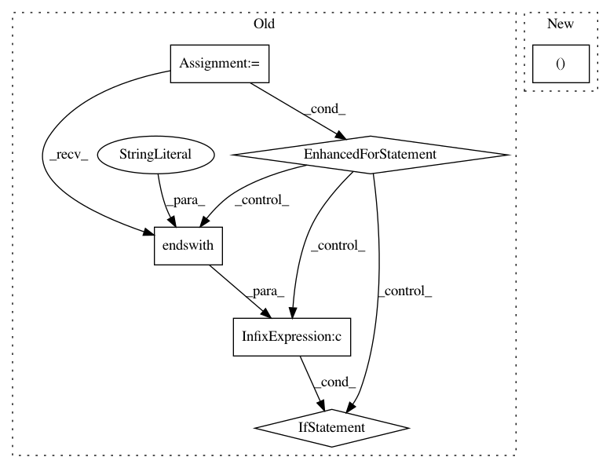

04519f15e750d1508c5c6bd6888210bdce348802,examples/run_all_examples.py,,,#,8
Before Change
// Run all the files in the EXAMPLE_DIR directory
st.title("Running All Examples")
for filename in os.listdir(EXAMPLE_DIR):
if filename == THIS_FILENAME or not filename.endswith(".py"):
continue
filename = os.path.join(EXAMPLE_DIR, filename)
st.write("Running `%s`..." % filename)
if filename in ["examples/mnist-cnn.py"]:
st.write("**Excluding %s.**" % filename)
continue
else:
os.system("python %s" % filename)
st.write("Done.")
st.success("Ran all examples files....")
st.balloons()
After Change
EXAMPLE_DIR = "examples"
// These are all the files we excliude
EXCLUDED_FILENAMES = (
// Exclude this file so we don"t run ourselves recursively,
os.path.split(sys.argv[0])[1],
// Exclude mnist becuase it takes so long to run.
"mnist-cnn.py",
// Exclude caching because we special case it.
"caching.py",
)
st.title("Running All Examples")
st.header("Important Note")
In pattern: SUPERPATTERN
Frequency: 4
Non-data size: 6
Instances
Project Name: streamlit/streamlit
Commit Name: 04519f15e750d1508c5c6bd6888210bdce348802
Time: 2018-11-23
Author: adrien.g.treuille@gmail.com
File Name: examples/run_all_examples.py
Class Name:
Method Name:
Project Name: scipy/scipy
Commit Name: bc83ffdfc021ac69baad19efac02d8fd47dc606e
Time: 2014-07-16
Author: argriffi@ncsu.edu
File Name: scipy/stats/_discrete_distns.py
Class Name:
Method Name:
Project Name: scipy/scipy
Commit Name: bc83ffdfc021ac69baad19efac02d8fd47dc606e
Time: 2014-07-16
Author: argriffi@ncsu.edu
File Name: scipy/stats/_continuous_distns.py
Class Name:
Method Name:
Project Name: streamlit/streamlit
Commit Name: 536c65f1fe2e1dc5fb64e278fd95d23f968a2599
Time: 2018-11-23
Author: adrien.g.treuille@gmail.com
File Name: examples/run_all_examples.py
Class Name:
Method Name: